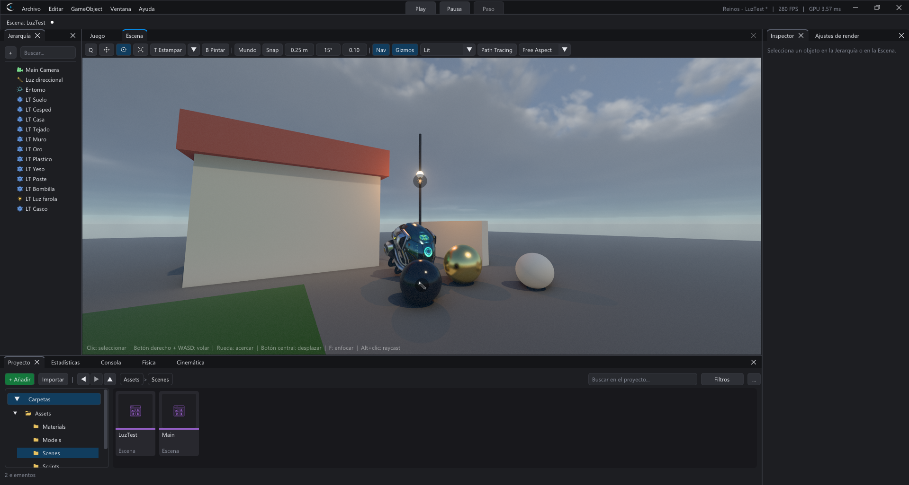
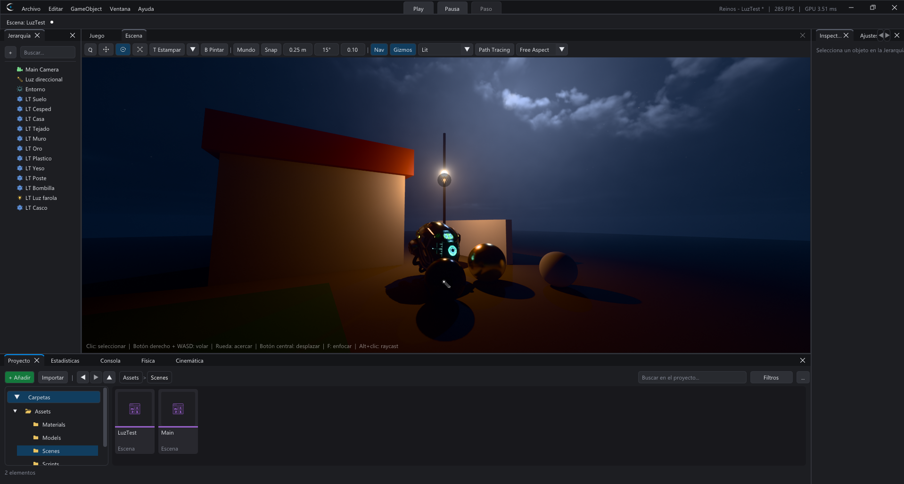

Render y rendimiento
Sombras, GI, trazado de rayos, escalado, presupuesto adaptativo y LODs.
En esta página
Cramion dibuja con Vulkan un render diferido con iluminación física: sombras en cascada del sol y sombras de luces locales, iluminación global (GI), reflejos, oclusión ambiental, niebla y luz volumétrica, nubes volumétricas, agua, decals y post-procesado. La calidad se ajusta en dos ventanas del menú Ventana; el aspecto de cada escena (exposición, bloom, color...) está en el componente PostProcessing.
Todo esto se puede cambiar también desde un script (un menú de opciones del juego) con la tabla Graphics.
Ajustes de render
| Ajuste | Qué hace |
|---|---|
Sombras | Activa las sombras. Ver cascadas colorea cada cascada del sol para depurar. |
Iluminación global | Luz rebotada (el color de las paredes tiñe lo de alrededor). |
Trazado de rayos (RTX) | GI y reflejos con trazado de rayos por hardware (solo en GPU que lo admiten). |
Sonda de reflexión | Captura del entorno para los reflejos de las superficies. |
Occlusion culling (GPU) | No dibuja lo que queda tapado por otros objetos. |
Configuración gráfica
Se guarda en ProjectSettings/Graphics.ini y la usa también el juego exportado.
| Ajuste | Qué hace |
|---|---|
Calidad rápida | Baja, Media, Alta o Ultra: ajusta todo a la vez. |
Escalado y antialiasing | Desactivado (resolución nativa + FXAA), TAA (temporal, también escala como TAAU), AMD FSR 1, AMD FSR 3.1 (cualquier GPU) o NVIDIA DLSS 4 (RTX). FSR 3.1 y DLSS 4 están marcados (INESTABLE): funcionan, pero solo ganan FPS si la escena depende de la resolución; si lo que pesa son las sombras o la geometría (mira Estadísticas), escalar no ayuda. En Nativa solo hacen antialiasing (DLAA) y cuestan FPS. |
Resolución | Nativa (100 %), Calidad (67 %), Equilibrado (58 %), Rendimiento (50 %), Ultra rendimiento (33 %) o una escala personalizada. Se muestra la resolución interna y la de pantalla. |
Nitidez | AMD RCAS después del escalado (0 = sin nitidez). |
Presupuesto adaptativo | Mide cuánto tarda cada pasada de la GPU y, si no se llega a los FPS objetivo, baja solo lo que más ahorra y menos se nota (LODs, detalle de sombras, efectos, resolución con FSR 1). Aprende lo que cuesta cada cosa en este PC y vuelve a subir la calidad cuando sobra tiempo. |
Sombras | Resolución por cascada del mapa de sombras del sol (4 cascadas); Auto según el perfil del PC. |
Texturas | Lado máximo de las texturas de los modelos (una de 16K sin comprimir ocupa 1,3 GB de VRAM). Se aplica a los modelos que se cargan después. Avisa si queda poca VRAM. |
VSync | Sincroniza con la pantalla. Sin VSync usa mailbox (sin cortes de imagen y sin tope de FPS). |
Día y noche realistas


La misma escena con el sol arriba y bajo el horizonte, sin tocar nada más. De noche se ve como la ve el ojo:
- Visión nocturna (efecto Purkinje). Con poca luz ven los bastones del ojo, que no distinguen colores y son más sensibles al azul: lo iluminado solo por la luna se vuelve gris azulado, mientras que lo que alumbra una farola o una antorcha conserva su color cálido. Se regula en el PostProcessing, grupo Exposición, Visión nocturna (1 = la del ojo, 0 = apagada). De día no cambia nada.
- Cielo nocturno: luna con sus mares y cráteres y un halo en la bruma, estrellas de distintos brillos y colores (azuladas, blancas, anaranjadas) y la Vía Láctea tenue. La luz de la luna es luz del sol reflejada: tenue y casi blanca.
- Luces dentro de su lámpara: lo que está a menos de 20 cm de una luz puntual o un foco no proyecta su sombra, así que la luz se puede poner dentro de la bombilla o del poste de la farola (como en Unity).
- La imagen sale con la curva sRGB exacta del monitor: sombras profundas, no lavadas.
Path tracing
El botón Path Tracing de la barra de la vista Escena (junto a Lit) cambia el render por una imagen de referencia con luz físicamente correcta, como el Path Tracer de Unreal: rayos por hardware que rebotan por la escena real con el material de cada superficie (difuso y especular GGX), sombras suaves del sol (el tamaño de su disco) y de las luces, luz indirecta, reflejos, cielo y niebla. Necesita una GPU con trazado de rayos.
Suma un camino por píxel en cada frame mientras nada cambie: el ruido baja solo y al lado del botón se ve cuántas muestras lleva (verde al terminar). Mover la cámara, una luz o un objeto, o cambiar un material, empieza de nuevo. Con clic derecho en el botón: Rebotes (interiores 4 a 8, exteriores 2 a 4), Muestras máximas y Empezar de nuevo. El vidrio, el agua, las partículas y el post-procesado se dibujan encima como siempre. Los rebotes chocan con los modelos de escenario; el terreno, los vóxeles y los personajes animados solo están en el primer punto (lo que ve la cámara).
Sombras por rayos de las luces
Con el trazado de rayos activado (GPU con rayos por hardware, calidad Ultra o
Graphics.set("ray_tracing", true)), las luces puntuales y los focos proyectan sombras trazadas contra la
escena real. Funciona para todas las luces locales con Proyecta sombras, no solo para las 8
puntuales y 8 focos que tienen mapa de sombras: en cada píxel se trazan las 4 luces que más le aportan.
- Radio de la fuente (Light): el tamaño de la bombilla. Pequeño (0,05 m) da sombras nítidas; grande (una lámpara, un fluorescente, 0,3 m o más) da un borde suave que se ensancha con la distancia, como en la realidad.
- Los rayos ven el escenario (los modelos). Los personajes animados, el terreno y los vóxeles siguen proyectando con los mapas de sombras: se usa la más oscura de las dos.
- Cuesta alrededor de medio milisegundo con una docena de luces en pantalla (RTX 4060 Ti, 1080p). Aparece como Sombras por rayos en las estadísticas.
Mesh shaders, micromapas y SER
Con una GPU que las tenga (NVIDIA RTX 40/50, AMD RDNA 3 o más nuevas) el motor usa solo tres extensiones de Vulkan de la generación actual; en la consola aparece cuáles detectó al arrancar. La imagen no cambia: solo cuesta menos dibujarla.
- Mesh shaders. Los escenarios se parten en meshlets (grupos de hasta 124 triángulos). En las sombras del sol la GPU descarta los que caen fuera de cada cascada y, en mallas cerradas, los que miran en contra de la luz; en la cámara, los que quedan de espaldas. Las mallas abiertas (hierba, follaje) y lo recortado por alfa siguen el camino de siempre.
- Micromapas de opacidad. El alfa del follaje se guarda dentro de la escena de rayos: la GPU sabe sin ejecutar ningún shader qué partes de cada hoja son opacas o hueco, y solo pregunta en los bordes.
- SER (reordenación de hilos del path tracing). Está pero apagado: con los materiales del
motor el path tracing de siempre es más rápido. Se activa arrancando con
CRAMION_SER=1.
CRAMION_NO_MESH=1 y CRAMION_NO_OMM=1 los apagan al arrancar el editor.
Fuerza de la sombra de cada luz
Cada Light tiene Fuerza de la sombra (Strength de Unity): 1 = sombra completa, 0,5 = a medias, 0 = no oscurece. Vale para el sol, las puntuales y los focos, y la respetan también el trazado de rayos y el path tracing.
Sombras del sol con penumbra
El sol no es un punto: mide 0,53 grados. Por eso su sombra es nítida donde el objeto toca el suelo y se suaviza cuanto más lejos está lo que la proyecta (alrededor de 1 cm de penumbra por cada metro): la sombra de un poste es dura al pie y la de la copa de un árbol o un tejado, suave. El motor lo calcula en las cascadas cercanas (PCSS: busca a qué distancia está lo que tapa y filtra con ese tamaño); las lejanas usan su filtro de siempre. Con las nubes cubriendo el cielo, la luz ambiente pasa del azul del cielo a un gris neutro.
Nubes volumétricas y sus sombras
Con el cielo físico (componente Sky, Nubes volumétricas) el cielo tiene nubes de verdad, iluminadas por el sol o la luna. Un mapa de clima reparte claros y masas; cada zona tiene su tipo y el viento las mueve, adelanta sus cimas y les cambia la forma poco a poco.
- Cobertura: 0 despejado, 1 cubierto. Densidad: más opacas y bases más oscuras.
- Tipo: 0 estratos (capa baja y plana), 0,5 cúmulos, 1 cumulonimbos (torres de tormenta).
- Altura de la base y Grosor de la capa (lo que pueden crecer).
- Viento (m/s) y su dirección.
- Sombras en el suelo y su fuerza: las nubes tapan el sol y sus sombras recorren el terreno.
Presets de post-procesado
El botón Presets... del Post-procesado (o clic derecho en cualquier componente > Presets)
aplica un preset de fábrica (Realista, Ultra realista (todos los efectos prendidos), Cinematográfico, Día soleado, Atardecer, Noche de luna, Terror, Tormenta,
Invierno, Retro, Blanco y negro) o uno del proyecto. Guardar estos valores como preset... lo crea en
Assets/Presets/<Componente>/ (un .crpreset que viaja con el proyecto; clic derecho en
él para borrarlo). Con varios objetos seleccionados se aplica a todos; en un volumen se conservan su forma, tamaño,
prioridad y peso.
Efectos de cámara: motion blur, profundidad de campo y lente
Están en el componente Post-procesado (global o por volumen, cada sección con su Sobrescribir):
- Motion blur: rastro de lo que se mueve, la cámara y cada objeto con sus vectores de movimiento. Intensidad es la parte del frame con el obturador abierto (0,5 = 180 grados, como el cine) y Rastro máximo lo limita en fracción del alto de la pantalla. El fondo quieto no se arrastra sobre lo que se mueve delante.
- Profundidad de campo: bokeh con la fórmula de una lente real: Distancia de enfoque (o Autoenfoque en lo que hay en el centro), Apertura (número f: 1,4 desenfoca mucho, 16 casi nada) y Focal en milímetros. Lo de delante desenfocado se esparce sobre lo enfocado; lo de detrás no.
- Distorsión de la lente: más de 0 barril (gran angular), menos de 0 cojín (teleobjetivo).
- Destellos del sol: fantasmas, halo y estrella cuando el sol está en pantalla; se apagan solos si algo lo tapa.
Se aplican en las vistas Lit (no en Unlit ni Wireframe) y no en las capturas de sondas.
Sombras del sol: cascadas y sombras de contacto
El sol usa 4 cascadas: mapas de sombra cada vez más grandes según se alejan de la cámara (su resolución se elige en Configuración gráfica). Están estabilizadas: el área que cubre cada una no depende de hacia dónde mires y se ajusta a la rejilla de texels, así que los bordes no tiemblan al mover la cámara. El borde se suaviza con un filtro PCF.
Las sombras de contacto (PostProcessing → Efectos) añaden lo que una cascada no puede resolver: el oscurecimiento justo donde algo toca el suelo (pies, piedras, patas de una mesa). Se calculan en pantalla recorriendo la profundidad píxel a píxel hacia el sol, como las contact shadows de Unreal y HDRP:
- El rayo solo cubre la escala que la cascada no ve (unos 10 texels de su mapa: pocos centímetros cerca, más lejos). Largo máximo es solo un tope. El resto de la sombra la dan las cascadas, así que no se ven dos sombras superpuestas ni cambia de forma al girar la cámara.
- No usa ruido sin filtro temporal: con Escalado y antialiasing en Desactivado la sombra es estable. Con TAA el inicio del rayo varía cada frame y el TAA lo convierte en una penumbra más suave.
- Con el sol rasante se desvanecen (ahí manda la cascada) y no se aplican a más de 60 m.
Luz volumétrica (polvo) y rayos de sol
La luz volumétrica simula polvo en el aire hasta 60 m de la cámara: se ven los haces del sol que entran por una ventana, el cono de un foco o el halo de una farola, cada uno con su sombra. El polvo recibe la luz del sol (sobre todo mirando hacia él: Anisotropía), de las luces locales y del cielo desde todas direcciones, así que también se nota de espaldas al sol como una neblina del color del cielo (más tenue a la sombra y en interiores). Densidad del polvo controla cuánto hay: 0,02 es una neblina ligera; por encima de 0,05 el horizonte queda velado. Si el presupuesto adaptativo necesita tiempo, el polvo no se apaga: se calcula con la mitad de tramos por rayo y sin los rayos de sol de pantalla.
Los rayos de sol (Light Shafts) son otro efecto, de pantalla: salen del disco del sol cuando se ve en la imagen y se apagan poco a poco al salir de ella. Para haces que se vean en cualquier dirección usa la luz volumétrica.
Mundos abiertos: niebla y vegetación
La niebla por altura se ajusta en el post-procesado:
Niebla (densidad a nivel 0; 0,0018 por defecto, pensada para escenarios pequeños) y Caída con la
altura (más = solo a ras de suelo). En un mundo de kilómetros baja la densidad a unos 0,0002 para ver lejos; con 0
no hay niebla. Afecta también al agua. Desde Lua: Graphics.post.fog_density = 0.0002.
Para bosques enteros usa la Vegetación en lugar de prefabs sueltos: los árboles se recortan y eligen su detalle en la GPU. Si la GPU va justa, baja su distancia máxima y la de sombras.
LODs automáticos
Al cargar un modelo, el motor crea versiones simplificadas de sus mallas (en memoria, sin tocar el archivo) y elige cada frame la que basta según lo grande que se ve en pantalla; las sombras lejanas usan versiones aún más simples y los objetos diminutos se dejan de dibujar. Las Estadísticas muestran cuántos triángulos y objetos se ahorran.
Consejos de rendimiento
- Marca Static lo que no se mueve: al exportar se combinan sus mallas (static batching).
- Modelos con cientos de piezas sueltas: Reimportar (combinar mallas) en el Proyecto.
- Luces locales con sombra: pocas. Las que se mueven, mejor sin sombras.
- Se dibujan a la vez hasta 32 luces puntuales y 8 focos: si hay más, las más cercanas a la cámara (o de más alcance). Las apagadas (intensidad 0) no cuentan. En un mapa grande, apaga por script lo que queda lejos.
- Decals: hasta 32 imágenes distintas por escena.
- Usa el Profiler (componente) en el juego y las Estadísticas en el editor para ver qué pasada cuesta más.